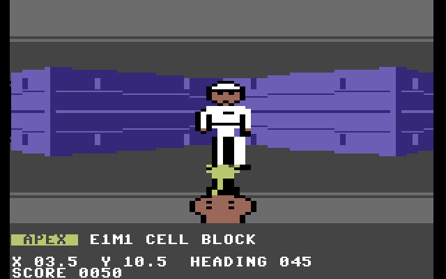
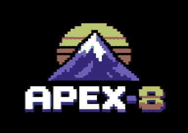
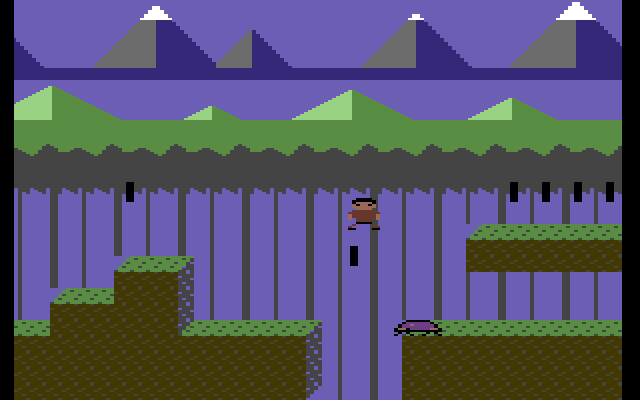
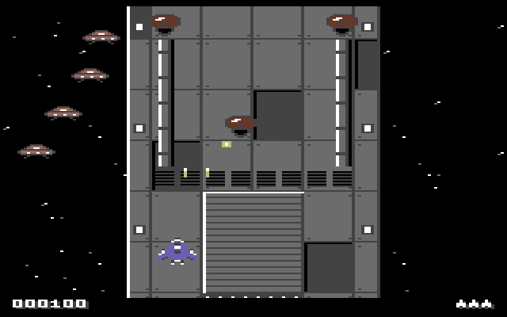
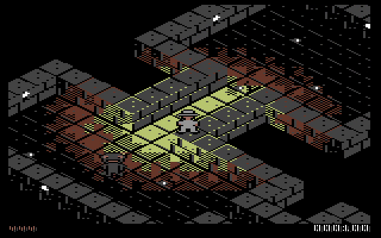
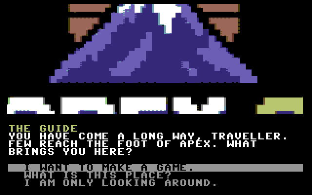

APEX-8 demos
Game engines for the Commodore 64. Each has a JavaScript reference that defines every frame and every SID tick, and a 6502 engine checked against it pixel for pixel in VICE.
These pages play the references, so they look and sound as the C64 does (the C64's own frame rate aside). Click or press a key to start the sound; M mutes it. Gamepads work too.


Shoot-'em-up
The Dreadnought
A vertical scroller over a huge ship, with waves of enemies. Uses an REU and a second SID when there is one.
Arrows or W / A / S / D fly · Space, Ctrl or K fire (hold for autofire)

Isometric adventure
The Drowned Crypt
The isometric engine as a game: explore the flooded crypt, aim and fire, with music and effects.
Arrows or W / A / S / D walk (two for diagonals) · hold Space to aim and fire

On a real C64 or a C64 Ultimate
Every engine is on one 1581 disk image, behind a menu: apex-8.d81. Each program is also linked above on its own.
- Mount the image as drive 8 (on a C64 Ultimate: browse to it and choose Mount, or Run).
LOAD"*",8thenRUN. Press a number to load a demo; reset for the menu.
- Joystick in port 2. The keys above work on the C64's keyboard too.
- A second SID at $D420 plays the sound effects, so the music keeps all three voices. The shooter also uses an REU when there is one. Without them everything still runs.
- The story mode's zooms and turns need an REU. It loads them from the disk at start-up, which takes a few minutes at a stock drive's speed; preload
mountain.reuinto the C64 Ultimate's REU (its REU settings) and they are there at once. On a stock C64 it shows still pictures in their place.